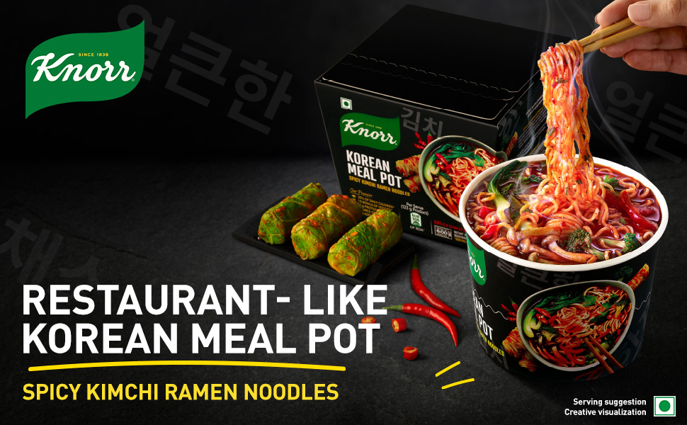
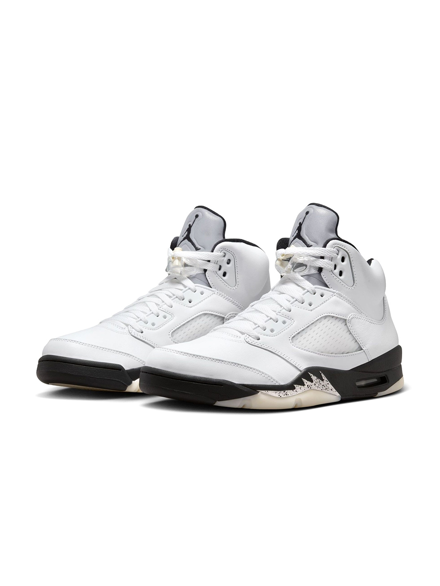

New!!! | Iphone 16 pro
The iPhone 16 Pro Max boasts a stunning Super Retina XDR display with ProMotion technology for ultra-smooth scrolling. Powered by the A17 Pro chip, it delivers exceptional performance, making it perfect for gaming and demanding applications. The advanced camera system includes a triple-lens setup with improved low-light capabilities, enhanced zoom options, and ProRAW and ProRes video recording.
With a sleek design featuring durable materials and new color finishes, the iPhone 16 Pro Max also offers robust battery life and fast charging. It supports 5G connectivity, enhanced Face ID, and the latest iOS features, making it a powerhouse for both productivity and entertainment. Whether capturing high-quality photos or streaming content, the iPhone 16 Pro Max is designed for users who demand the best.
- Original Price : $149,999
- Discount Price : $39,999
- One Day Delivery : + $800

Hot!!! | Knorr Korean Meal Pot - Spicy Kimchi Ramen-Microwavable
The ramen noodles are cooked to perfection and drenched in a rich, savory broth that captures the essence of traditional Korean cuisine.
Buy Knorr Korean Meal Pot - Spicy Kimchi Ramen online.The meal pot is designed for ultimate convenience, allowing you to prepare a satisfying meal in just minutes.
Simply microwave the pot and enjoy a delicious, steaming bowl of ramen that boasts the vibrant flavors of kimchi and a satisfying spice level.
Just search for Knorr Korean Meal Pot - Spicy Kimchi Ramen near me.The combination of spices and ingredients delivers a punch of flavor that will tantalize your taste buds and leave you craving more.
Ideal for busy individuals or anyone looking for a quick and satisfying meal, the Knorr Korean Meal Pot - Spicy Kimchi Ramen is a fantastic choice for lunch, dinner, or even a late-night snack.
- Original Price : $10.00
- Discount Price : $8.99
- One Day Delivery : + $1.00

Trending!!! | Air Jordan 5 Retro 'White and Black'
Get your piece of Jordan history and heritage with the Air Jordan 5 Retro. Based on the classic game shoe from 1990, it has all the iconic details, including the bump-out collar, lace toggle and fighter plane-inspired design lines.
- Original Price : $125
- Discount Price : $100
- One Day Delivery : + $8